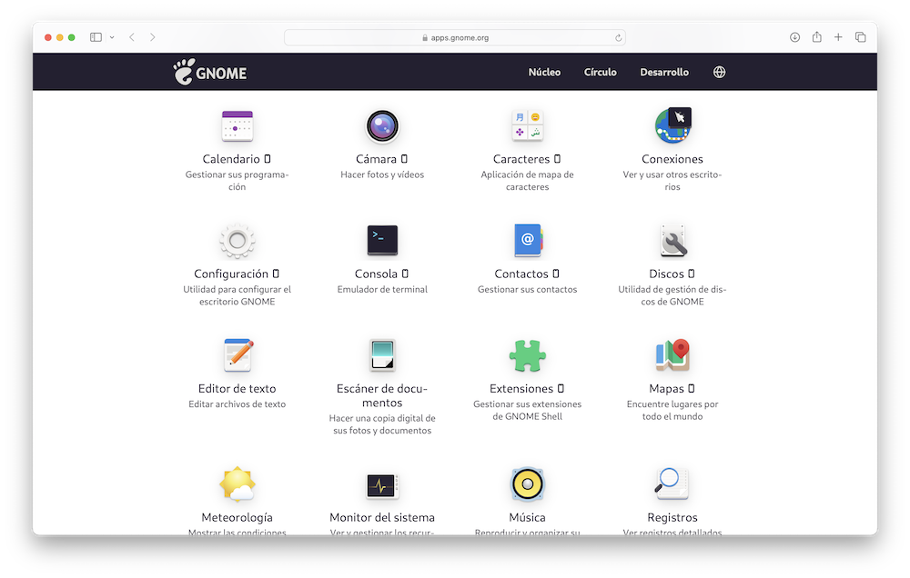

Trabajando con Linux¶
Una vez instalada y configurada la máquina virtual, vamos a mencionar algunas de las cosas que podemos hacer con ella.
Office¶
Si necesitamos un procesador de textos, una hoja de cálculo, elaborar presentaciones, etc, Libre Office es una completa solución de oficina que proporciona todas estas herramientas. Es más o menos compatible con Microsoft Office. Véase https://es.libreoffice.org para más información.
Libre Office es un software que tiene sus orígenes en un programa comercial de la década de 1980, llamado Star Office. En 1999 fue adquirido por la compañía Sun Microsystems, quien deseaba incorporar a su gama de herramientas un software de proceso de textos y hoja de cálculo. Lo publicaron en dos versiones, una con soporte comercial y otra en formato libre, denominada Open Office, en cuyo desarrollo involucraron a una amplia comunidad de programadores.
En 2010, Sun Microsystems fue absorbida por Oracle, quien canceló la política open source, por lo que muchos de los que se habían implicado en el desarrollo de Open Office abandonaron y se pusieron de acuerdo para dar inicio a un nuevo proyecto. Crearon una organización sin fines de lucro, llamada The Document Foundation, y pusieron en marcha el diseño de Libre Office, tomando Open Office como punto de partida.
Libre Office viene instalado de serie en las distribuciones de Ubuntu, y consta de seis módulos:
-
Libre Office Writer es el procesador de textos.
-
Libre Office Calc. Hoja de cálculo compatible con Microsoft Excel.
-
Libre Office Impress. Presentaciones.
-
Libre Office Base. Bases de Datos. En algunas distribuciones no suele venir por defecto, por lo que tendremos que instalarlo a mano.
-
Libre Office Math. Es un editor de ecuaciones científicas que luego podemos insertar en nuestros documentos.
-
Libre Office Draw. Editor de imágenes.
Tenemos la documentación del producto en:
https://documentation.libreoffice.org/
Navegador web¶
Ubuntu incluye de serie el navegador Mozilla Firefox. Su página web es https://www.mozilla.org/es-ES/firefox/.

El proyecto Mozilla nació en el año 1998, a raíz de la mala evolución y posterior desaparición de la empresa Netscape, comercializadora del programa Netscape Navigator. La Fundación Mozilla es una organización sin ánimo de lucro presentada en julio de 2003 para garantizar la continuidad del proyecto Mozilla más allá de la participación de voluntarios individuales.
Otra alternativa que podemos instalar es Chromium, el navegador web que utiliza Google como base para desarrollar Chrome. Opera es un navegador alternativo a Firefox, y Epiphany es un sencillo navegador que forma parte de las herramientas Gnome.
Correo electrónico¶
Ubuntu incluye el programa de correo electrónico de Mozilla, llamado Thunderbird. Al iniciarlo, basta con introducir nuestro correo y contraseña para que Thunderbird se encargue de verificar permanentemente si hay correos nuevos.
Como gestor de correo alternativo podemos instalar Evolution, un gestor de información personal que forma parte de las herramientas GNOME. Incluye correo electrónico, calendario, agenda y lista de tareas.
Fotos¶
Para visualizar nuestras fotografías, Gnome incluye un programa llamado Shotwell Photo Manager:
Otras alternativas son:
Photoshop¶
El equivalente es el célebre programa GIMP. Página web: https://www.gimp.org/
Autoedición¶
Para componer nuestras publicaciones y otros documentos profesionales, podemos usar Scribus.
Modelado 3D¶
Blender es un programa dedicado al modelado y animación tridimensional.
Programas de dibujo¶
Como herramienta de dibujo y gráficos vectoriales podemos usar Inkscape
Krita es otro programa de pintura digital e ilustración. Forma parte de las herramientas KDE:
Nótese que, aunque usemos el escritorio Gnome, no estamos limitados a sus complementos. También podemos usar las aplicaciones que forman parte del proyecto KDE, por ejemplo.
Otra alternativas de dibujo:
- Drawing
- Pinta es un programa de dibujo que emula el popular "Paint" de Microsoft.
- MyPaint
- KolourPaint es el programa de dibujo del escritorio KDE.
Multimedia¶
-
Reproductores de vídeo:
-
Reproductores de música:
-
Para hacer copias de discos:
- Sound Juicer CD Extractor - para copiar CDs
- Handbrake - para extraer videos de DVD
-
Edición:
- Audacity - editor de audio
- Shotcut - editor de video
- Kdenlive - editor de video
- OBS Studio - grabación, edición y transmisión de vídeos en streaming. Permite la emisión de vídeo en directo o videoconferencias, por ejemplo.
Mensajería¶
Desarrollo de juegos¶
Programas de utilidad¶
Además del Terminal y el editor de texto, Ubuntu incluye de serie pequeñas utilidades como:
- Calculadora
- Calendario
- Escaner de documentos
- Visor de documentos
Grabador de CDs y DVDs¶
Tomar imágenes con la cámara integrada¶
Ubuntu incluye un programa para visualizar lo que capturamos con la cámara. En el caso de máquinas virtuales, tenemos que asegurarnos que tenemos configurado el acceso a este dispositivo. Ver configuración de la máquina.
Videoconferencia¶
Muchas aplicaciones de videoconferencia son a través de una página web, como es el caso de Google Meet. También hay aplicaciones que podem os instalar, como es el caso de Skype, pero de todas formas, estaremos condicionados por el software del resto de participantes en la reunión.
Lector de libros electrónicos¶
Uno de los programas más populares es Calibre.
Programas de transferencia de archivos¶
Ubuntu incluye de serie un programa llamado Transmission. Otras opciones que podemos instalar son:
- FileZilla es un programa FTP. Podemos instalar la versión "Cliente" del repositorio, o la versión "Servidor" de la página web.
- Deluge es un gestor de descargas bitTorrent.
- Dropbox es un programa para gestionar el almacenamiento en la nube
Aplicaciones de Gnome¶
Ver Lista. De hecho, algunos de ellos vienen preinstalados en los sucesivas lanzamientos de Ubuntu.

La colección GNU¶
Ya hemos visto que GNU fue en sus inicios un proyecto de sistema operativo libre que ha ido evolucionando hasta convertirse en una amplia colección de software. Encontraremos la lista de programas en su página web.
Antivirus¶
Antes de instalar un antivirus, conviene hacer un análisis de los más populares. Los hay gratuitos y de pago. En este cuaderno mencionaré uno bastante popular, Clam AV.
Juegos¶
El ecosistema Linux cuenta con un repositorio de juegos de libre descarga que muchas veces nada tiene que envidiar a los juegos comerciales. Si abrimos el App Center y pulsamos en la categoría Games, veremos una amplia selección de programas.:
Tenemos una lista de juegos open source en la wikipedia. Alguno de mis favoritos:
- 0ad es una versión del conocido Age of Empires de Microsoft. Página web
- SGT Puzzles Collection es una entretenida colección de puzzles
- Pingus es un clon del famoso juego Lemmings. Página web
- GNOME Reversi Página web
- Aisleriot es la colección de solitarios de Gnome. Página web
- SuperTuxKart es un juego arcade de carreras. Página web
- la colección de juegos de KDE. Página web
Desarrollo¶
Además de las aplicaciones que hemos visto, podemos utilizar nuestro ordenador para desarrollar software. Cada lenguaje de programación es un mundo, pero las distribuciones de Linux suelen proporcionar toda clase de herramientas en sus repositorios, y algunas de ellas vienen instaladas de serie.
Por ejemplo, si abrimos el Terminal, con el comando apropiado encontraremos una versión del intérprete del lenguaje Python:
$ python3 -V
Python 3.10.12
o del compilador gcc:
$ gcc --version
gcc 11.4.0
Algunas veces me he encontrado con mensajes de error indicando que falta alguna de las piezas básicas. Lo suelo solucionar con el comando:
$ sudo apt install --reinstall build-essential
El paquete build-esential es un meta-paquete con todas las herramientas esenciales para compilar software. Contiene la GNU compiler collection, GNU debugger, bibliotecas y herramientas.
En cuanto a la escritura de programas, podemos utilizar el editor básico de nuestra distribución, pero existen otros editores. Uno de los más populares es Visual Studio Code, de Microsoft, con versiones para Linux, Mac y Windows. Otro de los clásicos es emacs, que forma parte de la colección GNU. Otra alternativa es Geany.